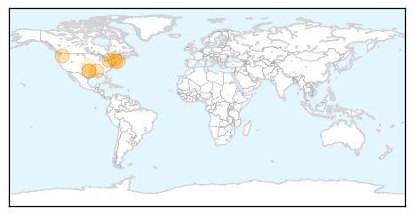

30 Day Trends
Web: 1 alerts, 0 warnings
Twitter: 1 alerts, 0 warnings
Top Articles:
- 0.984
- Virus-carrying mosquitoes found in Goshen
- 0.975
- Montana reports first human case of West Nile Virus for 2015
- 0.927
- Mosquitoes Test Positive for West Nile Virus in East Haven
- 0.918
- Dallas County reports first West Nile death
- 0.878
- Mississippi confirms 2 new cases of West Nile
- 0.867
- Mosquitoes test positive for West Nile Virus in Falmouth, Hyannis
- 0.765
- Seasonal upswing of West Nile Virus-positive mosquitoes prompts recommendations from health officials
- 0.702
- The City of Dallas reports first West Nile Virus death
- 0.643
- Health department urges residents to be vigilant against mosquitos
- 0.503
- Costa Rica begins fumigating planes at international airports to halt spread of animal disease -The Tico Times
Top Tweets:
-
No tweets found for Aug 26, 2015
Web/News Articles

Tweets

Article Locations
Article Confidences